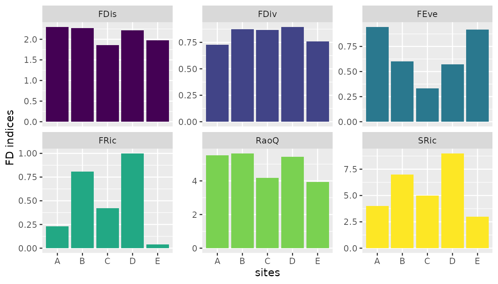
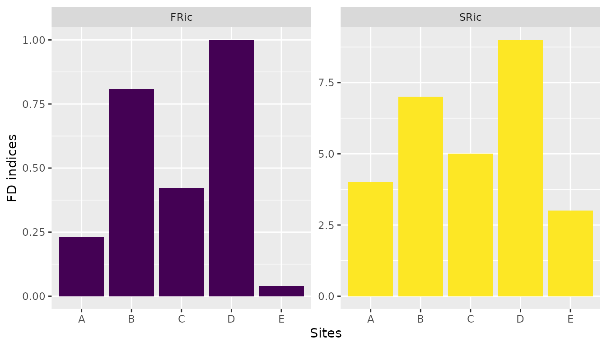

Computing functional diversity indices and community weghted means for macroinvertebrates.
Source:vignettes/macroinverts.Rmd
macroinverts.RmdThe fwtraits access the freshwaterecology.info database that contains several ecological parameters, traits and indicators used in biogeographical modeling, fuunctional diversity and taxonomic assessments, and ecological monitoring. These are grouped based on the taxonomic groups, including macroinvertebrates, fishes, phytoplankton, phytobenthos, and macrophytes. Therefore, in this workflow we demonstrated the use of ecological parameters from the database in assessing functional diversity.
NOTE
- We demonstrated using simulated the datasets to illustrate the use of the package and thus no ecological conclusions can be derived from the analysis.
Simulate the data used in the analysis
set.seed(1135)
sites1 <- rep(c("A","B", "C", "D", "E"), c(7,10, 8, 13, 4))
mv <- c("Margaritifera margaritifera","Pseudunio auricularius","Musculium lacustre",
"Musculium transversum","Corbicula fluminea","Congeria leucophaeata",
"Dreissena polymorpha", "Dreissena rostriformis bugensis",
"Parastenocaris germaica", "Branchiobdella balcanica",
"Branchiobdella hexadonta","Branchiobdella parasita","Branchiobdella pentadonta")
sp <- c(sample(mv, 7), sample(mv, 10),sample(mv, 8),sample(mv, 13),sample(mv, 4))
abun <- rnorm(length(sp), 1.3, 0.12)
macrodf <- data.frame(sites = sites1, species = sp, abund = abun)Retrieving the ecological parameters from the database
We considered two ecological references for macroinvertebrate species: stream zonation preference and feeding type. These were selected because most species have records, reducing missing values that might have required imputation.
It should be noted that imputing for missing traits is outside the scope of this package. So, species that do not have records were dropped when computing the functional diversity indices or community weighted means.
traitsdf <- fw_fetchdata(data = macrodf,
organismgroup = 'mi',
taxonomic_column = 'species',
ecoparams = c("stream zonation preference", "feeding type"),
inform = FALSE)1. Compute functional diversity indices
These are computed by setting
FD to TRUE and abund
parameter must be provided. They the indices are computed using the
FD package (Laliberté & Legendre 2010). The indices
tested included Functional richness (FRic), species richness (SRic),
Functional evenness (FEve), Functional diversity (FDiv), Funtional
dispersion (FDis), and Rao quotient (Rao Q).
#fd indices calculated when abundance is provided.
fdindices <- fw_fdcompute(fwdata = traitsdf,
sitesdata = macrodf,
sites = 'sites',
species = 'species',
abund = 'abund',
FD = TRUE)
#functional richness only: when abundance is not provided.
fdric<- fw_fdcompute(fwdata = traitsdf,
sitesdata = macrodf,
sites = 'sites',
species = 'species',
FD = TRUE)Visualisation of the ecological paramter for each index.
df <- fdindices |> tidyr::gather('fdind', "vals", -site)
ggplot(data = df, aes(site, vals, fill = fdind))+
geom_bar(stat = 'identity')+
scale_fill_viridis_d()+
theme(legend.position = "none")+
facet_wrap(~fdind, scales ='free_y')+
labs(x='sites', y='FD indices')
#Functional richness
dffric <- fdric |> tidyr::gather('fdind', "vals", -site)
ggplot(data = dffric, aes(site, vals, fill = fdind))+
geom_bar(stat = 'identity')+
scale_fill_viridis_d()+
theme(legend.position = "none")+
facet_wrap(~fdind, scales ='free_y')+
labs(x='Sites', y='FD indices')
1. Compute community weighted means.
Community weighted means measures how traits vary with environmental change (Guy-Haim & Bouchet 2025).
cwmdata <- fw_fdcompute(fwdata = traitsdf,
sitesdata = macrodf,
sites = 'sites',
species = 'species',
abund = 'abund',
FD = FALSE)1. Compute community weighted means.
cwmdata <- fw_fdcompute(fwdata = traitsdf,
sitesdata = macrodf,
sites = 'sites',
species = 'species',
abund = 'abund',
FD = FALSE, dummy = FALSE)Refereences
Laliberté, E., & Legendre, P. (2010). A distance‐based framework for measuring functional diversity from multiple traits. Ecology, 91(1), 299-305.
Guy-Haim, T., & Bouchet, V. M. (2025). Beyond taxonomy: A framework for biological trait analysis to assess the functional structure of benthic foraminiferal communities. Marine Pollution Bulletin, 213, 117699.